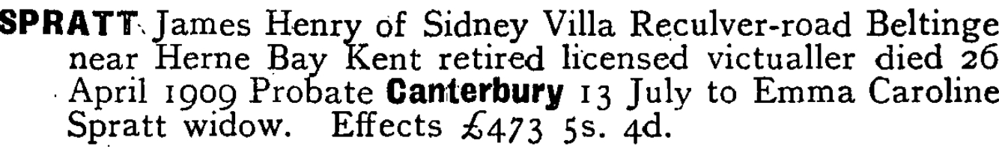
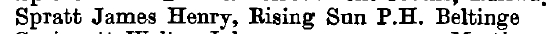
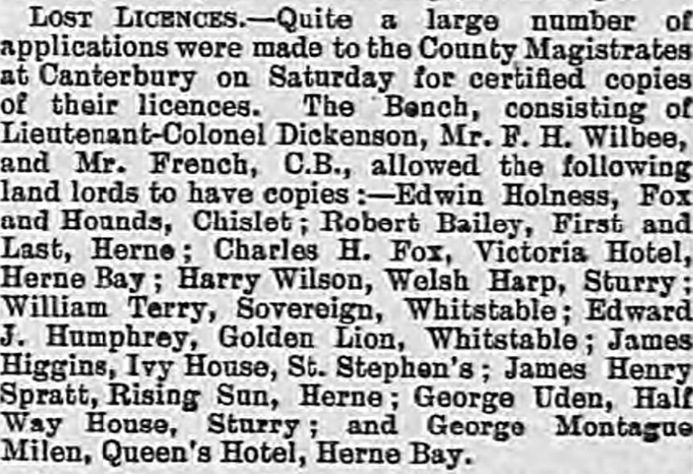
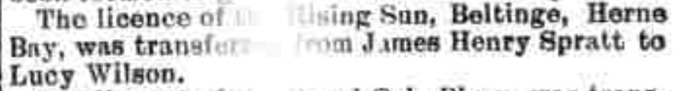
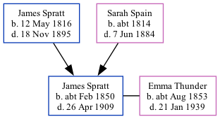

James Henry Spratt cFeb 1850 - 1909
[ Home ] | [ Calendar ] | [ Surnames Index ] | [ Family History ]The child of James Spratt and Sarah Spain, James Spratt, the great-great-uncle of <a href="I1.html">Nigel Horne</a>, was born in St Nicholas-at-Wade, Kent, England <i>c.</i> Feb 1850<span class="citation">1,2,3,4</span> and baptized there on Feb 17, 1850. He married Emma Thunder (a publican) at St Martin, Kentish Town, London, England on Jan 1, 1885<span class="citation">6</span>. Like his father, he was an agricultural laborer. </p><p>James spent all of his life in Kent, England. Throughout his life, he lived in several places around the county: at Crump's Farm in St Nicholas-at-Wade on Mar 30, 1851<span class="citation">1</span>; at his birthplace in 1861<span class="citation">2</span>; on Rising Sun, 103 Reculver Road, Beltinge, Kent, England on Apr 5, 1891<span class="citation">8</span>, on Mar 31, 1901<span class="citation">9</span>, in 1902 and in 1903; and on Sidney Villa, Reculver Road in Beltinge in 1909. <p>He died on Apr 26, 1909 in Blean, Kent<span class="citation">5</span>.
Parents
- James was born on May 12, 1816
- Sarah was born c. 1814
Citations
- 1851 England Census Online publication - Provo, UT, USA: The Generations Network, Inc., 2005.Original data - Census Returns of England and Wales, 1851. Kew, Surrey, England: The National Archives of the UK (TNA): Public Record Office (PRO), 1851. Data imaged from the National
- 1861 England Census Online publication - Provo, UT, USA: The Generations Network, Inc., 2005.Original data - Census Returns of England and Wales, 1861. Kew, Surrey, England: The National Archives of the UK (TNA): Public Record Office (PRO), 1861. Data imaged from the National
- England & Wales births 1837-2006 - Findmypast
- England & Wales, FreeBMD Birth Index, 1837-1915 Online publication - Provo, UT, USA: The Generations Network, Inc., 2006.Original data - General Register Office. England and Wales Civil Registration Indexes. London, England: General Register Office. © Crown copyright. Published by permission of the Cont
- England & Wales deaths 1837-2007 - Findmypast
- England & Wales Marriages 1837-2005 - Findmypast
- 1851 England, Wales & Scotland Census - Findmypast (was age 1 and the son of the head of the household)
- 1891 England, Wales & Scotland Census - Findmypast (was age 40 and the head of the household)
- 1901 England, Wales & Scotland Census - Findmypast (was age 51 and the head of the household)
Media
James Henry Spratt - probate

Kelly's Directory of Kent - 1903

Whitstable Times and Herne Bay Herald - 20 Sep 1902

Kentish Times and Farmers' Gazette February 11, 1905

1891 England, Wales & Scotland Census Transcription - GBC-1891-0005762864
England & Wales marriages 1837-2008 - BMD/M/1885/1/AZ/000216/128
England & Wales deaths 1837-2007 - BMD/D/1909/2/AZ/000318/159
England & Wales births 1837-2006 - BMD/B/1850/1/IS/001438/015
1901 England, Wales & Scotland Census - GBC-1901-0006243968
England Births & Baptisms 1538-1975 - R_884660025
Kent Baptisms - GBPRS/CANT/B/96801531
Family Tree
Generated by Ged2Site. Last updated on Jul 20, 2025